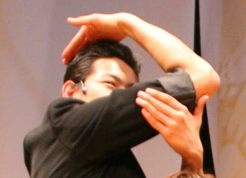
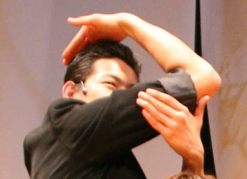

난이도별 죠죠서기
죠죠서기에도 나름 『난이도』 라는 것이 있습니다.
초보자분들이 따라하기 쉬운 것부터 고수들만 할 수 있는 것까지 종류는 다양합니다.
Level 1
첫 번째로 초보자분들이 따라하기 쉬운 죠나단서기입니다.
1. 왼팔을 앞으로 뻗는다.
2. 콧날에 왼손 집게 손가락을 맞춘다.
3. 오른쪽 어깨를 올린다.
4. 오른손을 뻗으며 구호를 외친다. ※ 구호 "인간 찬가는" "용기의 찬가!"
안나수이서기

 

1. 오른손을 머리에 얹는다.
2. 오른쪽 팔꿈치를 눈 높이까지 올린다.
3. 왼손을 사진과 같이 팔에 얹는다.
4. 턱을 당기고 상대나 카메라 등을 엿본다.
Level 2
리조토서기
1. 오른쪽 발을 앞으로 뻗는다.
2. 팔꿈치를 윗쪽으로 당겨 올린다.
3. 오른쪽 발꿈치를 든다.
4. 머리를 오른쪽 대각선 위로 치켜든다.
5. 구호를 외친다 ※ 구호 "마지막이다! 먹어라!" "메탈리카!"
죠셉서기
1. 팔을 머리 뒤로 넘기고, 왼팔 앞으로 교차시킨다.
2. 왼손의 엄지 손가락을 접는다.
3. 오른손의 손가락을 위로 올린다.
4. 허리를 왼쪽을 향하게 한다.
5. 얼굴은 왼쪽 대각선 아래를 향하고 시선은 정면을 향하게 한다.
죠르노서기(갱스터를동경하며서기)

1. 오른쪽 가슴을 연다.
2. 왼손은 옷을 아래로 당긴다.
3. 허리를 오른쪽으로 살짝 당긴다.
4. 야심가득히 웃는다.
Level 3
죠타로서기
1. 오른쪽 팔꿈치를 눈높이보다 높게 올린다.
2. 오른쪽 손목을 직각으로 접는다. 꽤 힘을 넣지 않으면 손목이 직각이되지 않기 때문에 주의해야한다.
3. 왼쪽 손목을 배꼽 앞에서 오른손과 평행하게 접는다.
4. 오른쪽 사선 위를 본다.
5. 미소를 지으며 구호를 외친다. ※ 구호 "네놈은 나를!" "화나게했다!"
카쿄인서기


1. 오른손의 집게 손가락으로 하늘을 가리킨다.
2. 왼손은 주먹을 쥔 상태에서 검지와 새끼 손가락을 세운다.
3. 시선은 위를 향한다(가장중요하다)
Level 4
죠타로서기(야레야레다제)


1. 왼발을 앞으로 뻗는다.
2. 왼발의 뒷꿈치를 올리고 뒤로 젖힌다.
3. 허리를 젖히고 오른손으로 가리키며 구호를 말한다. ※ 구호 "야레야레다제."
죠셉서기2


1. 왼손의 손가락을 만든다.
2. 왼팔을 세우고 손목을 구부린다.
3. 오른팔을 교차시킨다.
Level 5
죠디오서기(합체기술)

죠나단
1. 얼굴을 옆으로 향하고 오른손을 손바닥이 바깥 쪽을 향하게 내민다.
2. 분노의 표정을 짓는다.
디오
1. 양손을 바닥에 붙이고 팔꿈치를 구부린다.
2. 오른발을 왼발 위에 건다.
Level 7
DIO서기
1. 양손을 하늘을 향하게 하며 사과를 쥔 듯이 하고, 높이는 자신의 가슴높이정도로, 폭은 약 1m정도로 편하게 벌린다.
2. 양 발꿈치를 들어올린다.
3. 등을 젖힌다.
4. 구호를 외친다 ※ 구호 "무다무다무다앗!" "wryyyyy(으리이이)"